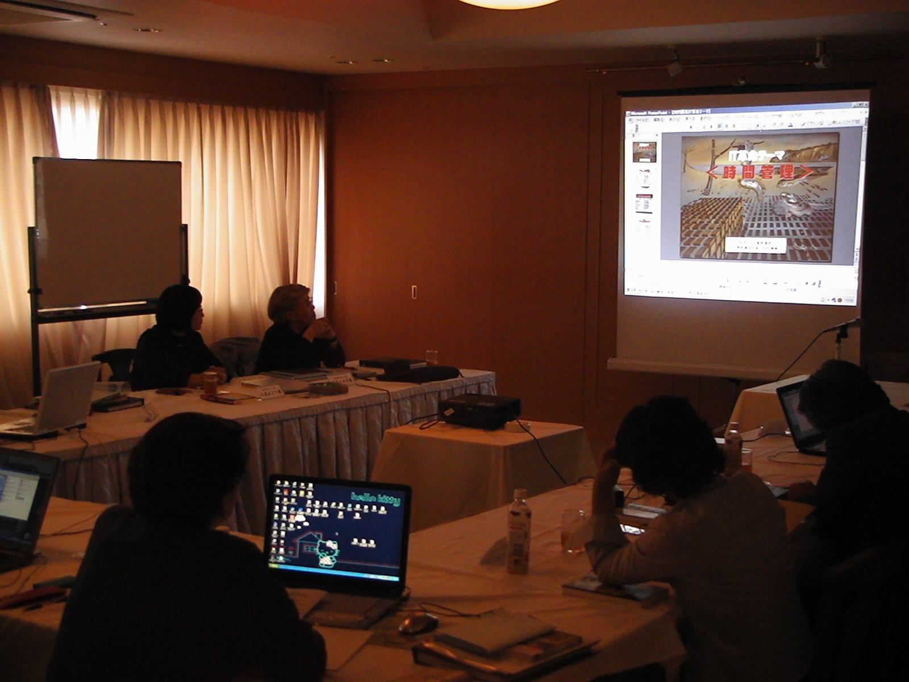

人材・お金・モノ・情報……そして時間。社員300人の会社の時間資産は年間63万時間超。そのうち3分の1が、いま無駄に使われています。矢部大のタイムマネジメントセミナーで「時間創造部」を立ち上げ、眠っている時間を、売上と成長に変えます。
経営に必要な資産は5つ。最後の一つを、多くの会社が見落としています。
300人×8時間×22日×12か月 ＝ 633,600時間。そのうち約3分の1、20万時間超が会議・伝達の無駄・指示のやり直しに消えています。
慧眼・深掘眼・先見眼の三視点で、会社の時間を根本から変える。
出社する本音は「給料をもらう」「家族を養う」「自分のため」。タテマエと本音を見抜き、社員が毎日8時間を命を削る本番として向き合える環境をつくる。
会議の無駄・コピーの無駄・電話の無駄・上司の指示の無駄――社内の時間資産がどこで消えているかを徹底的に洗い出し、構造から変える。
18歳人口は30年で半減（205万→109万人）。中小企業の人材難は深刻化する。5年・10年先の時間軸で今の戦略を考え、会社の時間を未来への投資に変える。

伝達力の問題を数値で見ると、驚くべき事実が浮かびます。
言いたいことの100%は、部下には30%以下しか届かない。
それが「なぜ会議が繰り返されるのか」の根本原因です。
上司が返してくる質問を事前に想定し、答えを先に用意する。会議の往復回数をゼロに近づける技術。
洞察力を磨く時間／慈悲の大耳で聞く時間／珠玉の言葉で指導する時間——会議の性質を意図的に設計する。
「上司の立場になって考える」＝お客様の立場になって考え抜く感動の提供と同じ発想。これが時間節約の最短距離。
引き継ぎ・慣習・前任者の仕事を棚卸しし、「なぜこれが必要か」を根本から問い直す。
月〜金に各テーマを持つだけで、仕事の質が劇的に変わります。
各テーマを週ごとに深掘り（帝王学の研究／褒める技術／洞察力の訓練 etc.）。「何を考えるか」が決まると、時間の密度が変わります。
5分の愛着 / 20分の情熱 / 1時間の気迫 / 半日の充実感 / 1日の感謝
時間の長さに応じた姿勢の使い分けが、仕事の質を根底から変えます。
今日の9時から10時をどう生きるか——ゴールのない仕事はやる気が出ません。時間にゴールを設定し、「今を活きる」状態を仕組みとして作る。それが時間創造部の真髄です。
矢部大が時間の本質に目覚めたきっかけ——
10歳上の兄から末期癌の告知を受けたとき、兄が言った言葉。仕事を口実にして実行できなかったことが、病気になって初めて「今しかない」と見えた——この体験が、時間創造部の設立につながった。
病気になって分かったんだよ。心の底から感謝の気持ちをこめた「ありがとう」が言えるようになったのは、この病気になってから。
矢部廣重のスーパータイムマネジメントをベースに、矢部大が企業向けに体系化。
「管理する」から「輝かせる」へ。時間は削るものではなく、使い方で密度が変わる。慧眼・深掘眼・先見眼の3視点で、自社の時間資産を見直す。
会議の無駄・伝達のロス・上司の指示の往復——数値に落として「うちの会社で何時間が消えているか」を可視化する実践ワーク。
「時間を生むこと」を担う仕組みを組織内に設置。感動創造部と連携し、生み出した時間を売上に変換する設計まで描く。
月〜金の曜日テーマ、週次サブテーマ、1時間単位のゴール設定を実際に作成。「今を活きる」体制を個人・チームに落とし込む。
若年層人口の半減、AI時代の人材戦略——10年後の時間軸で見たとき、今の業務設計は正しいか？先見眼を使った中長期時間戦略を立案する。
「時計メーカーの会議室」を舞台にした体感型演劇研修。各部署の社員が「時間研究者」として登壇し、チームで時間の本質を発見する。※社内研修向けに演出可能

矢部廣重（創業者）の超時間発想術を、矢部大が企業研修向けにアレンジ・体系化。「時間を管理する」から「時間を輝かせる」へ——本書がタイムマネジメントセミナーの根幹を成しています。
Amazonで見る →IT・システム開発企業（創業3年）でのクライアント成果の一例。「意思決定の速度が体感で3倍になっています」